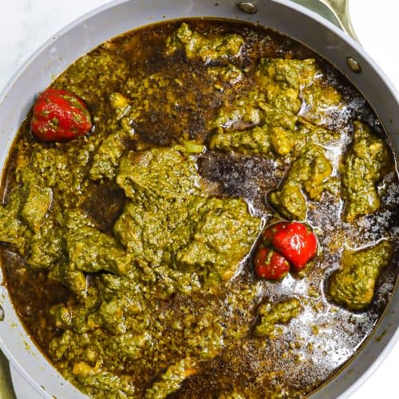

Cassava Leaves

Description
Cassava leaves is an African delicacy. In Sierra Leone, it is one of the most popular dishes, and most recommended to tourists who care to try traditional meals.
It can be prepared using different methods, as long as it has all the basic ingredients in it. Most importantly, cassava leaves is best served with rice. One can eat it with whatever they please to, but rice is the most ideal. A plate of cassava leaves, really saves the day!
Ingredients
- Cassava Leaves
- Groundnut
- Oil
- Fish
- Meat (Optional)
- Ogiri (fermented sesame seeds) (Optional)
- Maggie
- Salt
- Onions (Optional)
- Pepper
- Okra (Optional)
Steps
- Add water and salt to cassava leaves and boil for 15mins, leaving the pot open
- Mix groundnut with little water to form a light paste and to cook for 3mins
- Add oil, and blended pepper, onions and ogiri and leave to cook for 5mins
- Add Fish/pre-cooked meat, Okra, and maggie to taste
- Leave to cook for 2mins
- Serve with rice
Home